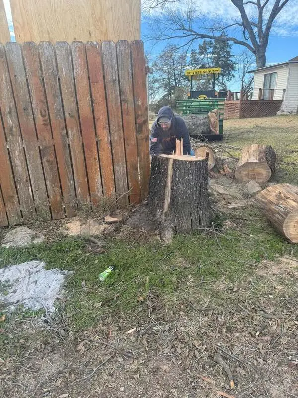

Brownwood, Texas
Finish the removal below ground.
Stump grinding clears the obstruction left after a removal so mowing, landscaping and normal yard use are easier.

New removals and old stumps
SC Tree Service can grind a stump after completing a tree removal or handle an existing stump left behind by another crew. Access, stump diameter, root flare and nearby hardscape all affect the job.
Send one useful photo
Photograph the full stump with enough surrounding yard visible to show access for the grinder. Include a rough diameter or place a familiar object nearby for scale.